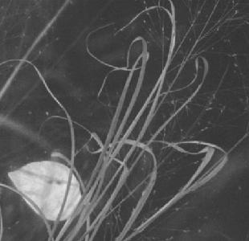

Saturday, December 27, 2003
Decreational Vehicle
With a supreme effort of will, I flung myself out into the sunshine and headed for the river. No camera this time. Just a walk.
It was cold, but not overly so. The sun was sinking, but still bright. I turned down the small drive beside the Chinese restaurant, toward the granite marker announcing the path. There's a little roadway that curves along past a graffiti wall and comes out at the base of the railroad trestle bridge. It was very ugly there today. The fallen leaves were matted and rotting into a uniform brown crud around beer cans and plastic drink bottles. Up a small slope to the left, there were dumpsters and trucks. Junk. Everything seemed mud colored, putrefying, sad.
So I crossed the footbridge and took the usual route. The snow is gone. The various red berries and strange gold seedpods are still present, but sparser. I think the gold seeds might be Japanese Knotweed, apparantly a wildly invasive species. The beautiful nameless grass is still there, its seedheads nearly bare.
I turned down the path toward the river hermit's encampment. The river is full and fast from snowmelt, and opaque. I looked from a distance: no blue dome. Lawnchairs still there. I approached, cautious, feeling like a trespasser. It was little more than a midden.
The tent was in fact there, but collapsed. Oddly enough, scattered on top of it and around it, was luggage: four or five big suitcases, unmatched, one partly open and full of clothes. The collapsed tent was vaguely lumpy, and covered with plastic sheeting and tarps. A long, rolled-up rug and cloth thing protruded, with a swaddled knob at one end, like a head. For a moment I worried that it contained a dead hermit. I sniffed the air: no rotting flesh. I hoped the hermit had found suitable shelter.
Then, suddenly, down the little root-bound mud path, roared an all- terrain vehicle, a hideous unnatural radioactive lime green, on four big bulbous tires. Like some awful sci-fi video game insect. Certainly not legal, and certainly unwelcome. The driver greeted me cheerfully and drove past, a flesh-and-petrochemical embodiment of intrusive noise and environmental depredation, and seemingly oblivious to any possibility that his presence might be inappropriate.
My woodland sanctuary had been invaded by the internal combustion enemy, an ugly coital coupling of vile machine and thoughtless human, direct descendant of the infernal engine that, three months ago, broke my neck and derailed my life.
Disgusted, I turned around and walked home with the wrenching image of bulbous rubber grinding the beautiful nameless grass into the mud.
It was cold, but not overly so. The sun was sinking, but still bright. I turned down the small drive beside the Chinese restaurant, toward the granite marker announcing the path. There's a little roadway that curves along past a graffiti wall and comes out at the base of the railroad trestle bridge. It was very ugly there today. The fallen leaves were matted and rotting into a uniform brown crud around beer cans and plastic drink bottles. Up a small slope to the left, there were dumpsters and trucks. Junk. Everything seemed mud colored, putrefying, sad.
So I crossed the footbridge and took the usual route. The snow is gone. The various red berries and strange gold seedpods are still present, but sparser. I think the gold seeds might be Japanese Knotweed, apparantly a wildly invasive species. The beautiful nameless grass is still there, its seedheads nearly bare.
I turned down the path toward the river hermit's encampment. The river is full and fast from snowmelt, and opaque. I looked from a distance: no blue dome. Lawnchairs still there. I approached, cautious, feeling like a trespasser. It was little more than a midden.
The tent was in fact there, but collapsed. Oddly enough, scattered on top of it and around it, was luggage: four or five big suitcases, unmatched, one partly open and full of clothes. The collapsed tent was vaguely lumpy, and covered with plastic sheeting and tarps. A long, rolled-up rug and cloth thing protruded, with a swaddled knob at one end, like a head. For a moment I worried that it contained a dead hermit. I sniffed the air: no rotting flesh. I hoped the hermit had found suitable shelter.
Then, suddenly, down the little root-bound mud path, roared an all- terrain vehicle, a hideous unnatural radioactive lime green, on four big bulbous tires. Like some awful sci-fi video game insect. Certainly not legal, and certainly unwelcome. The driver greeted me cheerfully and drove past, a flesh-and-petrochemical embodiment of intrusive noise and environmental depredation, and seemingly oblivious to any possibility that his presence might be inappropriate.
My woodland sanctuary had been invaded by the internal combustion enemy, an ugly coital coupling of vile machine and thoughtless human, direct descendant of the infernal engine that, three months ago, broke my neck and derailed my life.
Disgusted, I turned around and walked home with the wrenching image of bulbous rubber grinding the beautiful nameless grass into the mud.
FDA Official Advises "Think"
Tracing History of Infected Cow May Take Time:
A spokesperson from the FDA weighs in on tracing the type of feed consumed by the Mad Cow.
"Think yourself what you might have eaten four and a half years ago,' he said. 'That's not the kind of thing people keep really accurate records on."
It does not reassure me that someone "in charge" engages in this type of specious argument.
How can he even posit a similarity between records that might reflect what a single human has eaten -- an obsessive compulsive foodie's diary maybe -- and the records kept by a large livestock producing corporation ? It may well turn out that the farm in question did not "keep accurate records," but there's a hell of a better chance that it did than for any single human. There are receipts, tax forms, bank and credit records. Plus cattle -- correct me if I'm wrong -- don't eat something different every day. I bet they eat the same slop day in and day out for years and years. Businesses keep records of stuff like that. Individuals don't. The FDA spokesperson is probably setting us up for a whitewash and cover-up, hoping we'll fall for his invalid argument. Or at the very least for the likelihood that the industry is totally unregulated, held to little or no account, held to no standards of record keeping and animal tracking.
Of course the first thing out of Scott McClellan's mouth was that the President was about to pound down some beef.
My God, is there no one in the Bush administration that is not porking out on beef this week ?
The crucial question is, will we even be able to tell the difference when these twitchy, demented men come down with Mad Cow ?
I bet even that mass-pheasant-murdering Cheney is disobeying his cardiologist and having a few mandatory Republican patriot burgers. (Just double up on the Lipitor, Dick. The boys at Pfizer are looking out for you.)
"Porking" is, despite the mixedness of its metaphoricity, intentional. As Dr Greger points out, it's currently legal to feed cow brains and other offal to pigs. Pigs don't live long enough prior to slaughter to manifest prion brain disease. Chickens eat that stuff too. And pets. Is BSE something we really want to mess with ? Those prions are hardy motherfuckers. Not much kills them.
I remember back in the day (you know, when titans trod the earth) when I was in med school, I was memorizing obscure neurological diseases. For some reason -- probably its cool Euro eponym -- Creutzfeldt-Jakob disease impressed me. Myoclonus, then increasing dementia, eh ? "I'm going to remember that," I vowed, "and someday I'm going to find a case."
Little did I know that, as time went on, nature, abetted by corporate and governmental greed and ignorance, would be working at serving me up just such a case.
On a platter.
A spokesperson from the FDA weighs in on tracing the type of feed consumed by the Mad Cow.
"Think yourself what you might have eaten four and a half years ago,' he said. 'That's not the kind of thing people keep really accurate records on."
It does not reassure me that someone "in charge" engages in this type of specious argument.
How can he even posit a similarity between records that might reflect what a single human has eaten -- an obsessive compulsive foodie's diary maybe -- and the records kept by a large livestock producing corporation ? It may well turn out that the farm in question did not "keep accurate records," but there's a hell of a better chance that it did than for any single human. There are receipts, tax forms, bank and credit records. Plus cattle -- correct me if I'm wrong -- don't eat something different every day. I bet they eat the same slop day in and day out for years and years. Businesses keep records of stuff like that. Individuals don't. The FDA spokesperson is probably setting us up for a whitewash and cover-up, hoping we'll fall for his invalid argument. Or at the very least for the likelihood that the industry is totally unregulated, held to little or no account, held to no standards of record keeping and animal tracking.
Of course the first thing out of Scott McClellan's mouth was that the President was about to pound down some beef.
My God, is there no one in the Bush administration that is not porking out on beef this week ?
The crucial question is, will we even be able to tell the difference when these twitchy, demented men come down with Mad Cow ?
I bet even that mass-pheasant-murdering Cheney is disobeying his cardiologist and having a few mandatory Republican patriot burgers. (Just double up on the Lipitor, Dick. The boys at Pfizer are looking out for you.)
"Porking" is, despite the mixedness of its metaphoricity, intentional. As Dr Greger points out, it's currently legal to feed cow brains and other offal to pigs. Pigs don't live long enough prior to slaughter to manifest prion brain disease. Chickens eat that stuff too. And pets. Is BSE something we really want to mess with ? Those prions are hardy motherfuckers. Not much kills them.
I remember back in the day (you know, when titans trod the earth) when I was in med school, I was memorizing obscure neurological diseases. For some reason -- probably its cool Euro eponym -- Creutzfeldt-Jakob disease impressed me. Myoclonus, then increasing dementia, eh ? "I'm going to remember that," I vowed, "and someday I'm going to find a case."
Little did I know that, as time went on, nature, abetted by corporate and governmental greed and ignorance, would be working at serving me up just such a case.
On a platter.
Friday, December 26, 2003
For the Birds

It's easier to photograph weeds than birds.
The other day I noticed our side weedlawn was being swamped by a flock of brown birds. Dozens of them were pecking at the ground as dozens were landing beside them. They kept coming, more and more of them, falling through the air past my second floor window onto the lawn. I should know what kind of birds they were: midsized, brown, dull, thick, speckled. They are commonplace birds, ubiquitous. I think they might be starlings, and when I turn to Peterson, there is this mild rebuke:
The Starling, like the Crow, English Sparrow and Robin, should need no introduction, yet it is surprising that some people do not know the bird.
Mr. Peterson, I do know Crows and Robins. I am familiar with cardinals, blue jays, and red winged blackbirds. Also chickadees. And pigeons. And mallards. Mourning doves, too. Oh, and sea gulls. But that's the extent of my pathetic life list.
I've seen little yellow birds in the woods, and various sorts of geese and swans on the river. I saw a strange bird on Boston harbor, once, which seemed to float submerged midway up its long, dark neck. As a child, I admired the picture of the scarlet tanager in my Uncle's audubon book.
As to sparrows, I suspect I have seen them, probably many of them. But, sir, again I plead ignorance. Does it count for anything that I have dubbed my ex-husband, not unkindly, "Philip My Sparrow" after the Elizabethan Song ?
Of all the birds that I do know
Philip My Sparrow Hath no peer
For sit he high or sit he low
Be he far off or be he near
there is no bird so fair so fine ...
And for the rest of the lyrics I must consult my tattered, masking-taped paperback copy of An Elizabethan Song Book edited by WH Auden and Chester Kallman, which I inherited years ago from my father, dear Raul Stanati. Beneath Raul's familiar loopy signature there is the date: 1/26/68. Thirty five years !
He was studying for a PhD in Musicology, and taking a course in Renaissance music; he subsequently switched departments to Education, and I inherited his wonderful collection of early music: I still have the Deutsche Grammophon Gesellschaft LPs in their scholarly, ultra-serious beige sleeves: Archive Production, History of Music Division.
I listened to them so passionately and so incessantly that the music has become deeply imprinted in my brain. And then I moved on to the superstars, Alfred Dellar, Julian Bream, Franz Brueggen. Scraps of those songs still haunt me like ghosts in a thicket . Virgine Bella. I care not for these ladies. Riu riu chiu. Flow my tears. If I love Amaryllis, she gives me fruit and flowers.
This was the sound track to my Freshman year at college. Passionate about music and poetry, but studying biology. Homesick, lonely, disconnected, at a loss.
...Nor yet so fresh as this of mine
For when he once has hath felt a fitte
Philip will cry still yet yet yet yet
yet yet yet yet yet yet yet yet yet yet
Yes, the birds on the lawn were Hitchcockian. And Raul Stanati wanted his doctorate. He wanted his daughter to be a doctor.
My weedlawn was teeming with nameless birds, possibly starlings, probably not sparrows. I grabbed my camera and ran out the front door. Startled, they swarmed upward in a great cloud, and landed in a maple tree. They studded the bare branches like fruit. I pointed the camera, focused and snapped, and the whole great mass of them wheeled off. I could not advance the film fast enough to catch them midflight.
My song book's in tatters, the music is locked up silent in wax grooves; the grave jackets of the DGG Archives LPs have split. Raul Stanati got his EdD; his dissertation was on teaching song forms to high school students using Beatles tunes. I, of course, got my MD. Decades later, dear Raul, after taking up meditation, disavowed ambition and declared that exerting undue influence and control over one's children lives was folly.
By then it was too late for me.
Wednesday, December 24, 2003
Where Is Upton Sinclair When We Need Him
What a swell policy: do a woefully inadequate number of tests, and then lose (hide, shred, cover-up, misplace) the results.
Via Buzzflash:
USDA Refused to Release Mad Cow Records
Via Buzzflash:
USDA Refused to Release Mad Cow Records
Marriage Bed

Veneman: The beef is tainted, EAT MORE BEEF !
With the USDA in charge, bioterrorism wannabe Osama Bin Laden can just kick back in his cave and let Anne Veneman do his dirty work.
Watching the local 11 pm news last night (yes, yes I know, what do I expect) one might dismiss the mad cow/BSE story as a piffle. Over footage of a poor cow staggering about (implication: this is the sick cow -- we've found it, it's in custody, not to worry !) we saw the aggie secretary spending more time reassuring us that eating beef is completely safe, and that she was going to serve beef on Christmas, than in giving the details of the story.
Which would have included (as the Globe article stated this morning) that this was a downer cow -- a cow too sick to walk into the slaughterhouse under its own steam -- whose BSE test was sent off weeks ago. And which was immediately sent into the slaughterhouse and made into meat. Meat that is now being tracked down for a recall.
And tell me again why it should it ever be OK to make a "downer" cow into food ? Oh, yeah -- the legislature declined to pass a bill prohibiting it !
And why on earth would a "downer cow" be sent into the food chain even before the BSE test results return ?
Oh, yeah -- it's just a pathetically inadequate epidemiologic "screening" test run on 20,000 cows a year (out of how many millions ?), not a test designed to protect the public from any one specific sick cow.
Take home lesson ?
The government exists to protect corporations and the mainstream news media exists to protect the government.
Heaven help us all.
Obvious lessons in this:
Avoid TV news. Its function is to lie, and shill and pander. There are better sources of information available.
Go vegan. It's kinder and safer and more healthful.
Watching the local 11 pm news last night (yes, yes I know, what do I expect) one might dismiss the mad cow/BSE story as a piffle. Over footage of a poor cow staggering about (implication: this is the sick cow -- we've found it, it's in custody, not to worry !) we saw the aggie secretary spending more time reassuring us that eating beef is completely safe, and that she was going to serve beef on Christmas, than in giving the details of the story.
Which would have included (as the Globe article stated this morning) that this was a downer cow -- a cow too sick to walk into the slaughterhouse under its own steam -- whose BSE test was sent off weeks ago. And which was immediately sent into the slaughterhouse and made into meat. Meat that is now being tracked down for a recall.
And tell me again why it should it ever be OK to make a "downer" cow into food ? Oh, yeah -- the legislature declined to pass a bill prohibiting it !
And why on earth would a "downer cow" be sent into the food chain even before the BSE test results return ?
Oh, yeah -- it's just a pathetically inadequate epidemiologic "screening" test run on 20,000 cows a year (out of how many millions ?), not a test designed to protect the public from any one specific sick cow.
Take home lesson ?
The government exists to protect corporations and the mainstream news media exists to protect the government.
Heaven help us all.
Obvious lessons in this:
Avoid TV news. Its function is to lie, and shill and pander. There are better sources of information available.
Go vegan. It's kinder and safer and more healthful.
Tuesday, December 23, 2003
A Foolish Thing Was But A Toy
Prostrations

Decorations

Sunday, December 21, 2003
Event
From my second floor window I see fading orange and purple through cloud rifts; a string of Christmas lights, draped across some shrubs, in a gap between houses; a solitary streetlamp just above the clotted tangle of the horizon. Like a big, strange star. The longest night approaches.
I have felt a heavy silence in me. Something mute and dumb. A great, deadened fatigue with talk, opinion, display, analysis, critique. What is "right speech" ?
A fragment from a hymn floats up: Let all mortal flesh keep silence
It turns out , to my surprise, to be an Advent hymn, and the prescribed silence is one of awe in face of the coming of Christ.
Today, in face of increasing terrorist "chatter," the government elevates the threat level to orange. A vague, unspecified menace is described in apocalyptic terms: near-term attacks that could either rival or exceed what we experienced on September 11. I suspect cable news has begun its own ceaseless chatter. We must be vigilant. We must keep shopping. They hate freedom.
The department of homeland security site advises stockpiling, among other things, "moist towelettes."
Chatter, silence, awe, impending event.
I have felt a heavy silence in me. Something mute and dumb. A great, deadened fatigue with talk, opinion, display, analysis, critique. What is "right speech" ?
A fragment from a hymn floats up: Let all mortal flesh keep silence
It turns out , to my surprise, to be an Advent hymn, and the prescribed silence is one of awe in face of the coming of Christ.
Today, in face of increasing terrorist "chatter," the government elevates the threat level to orange. A vague, unspecified menace is described in apocalyptic terms: near-term attacks that could either rival or exceed what we experienced on September 11. I suspect cable news has begun its own ceaseless chatter. We must be vigilant. We must keep shopping. They hate freedom.
The department of homeland security site advises stockpiling, among other things, "moist towelettes."
Chatter, silence, awe, impending event.